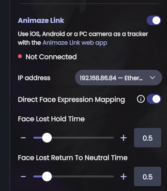
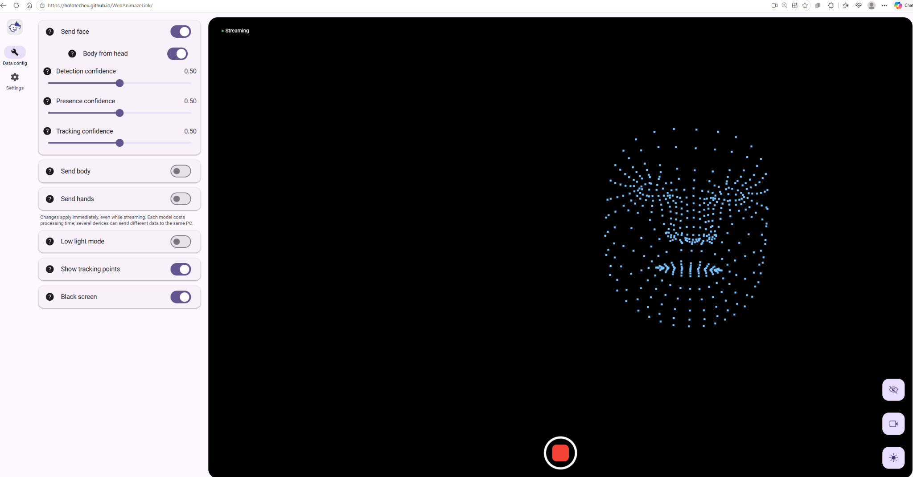
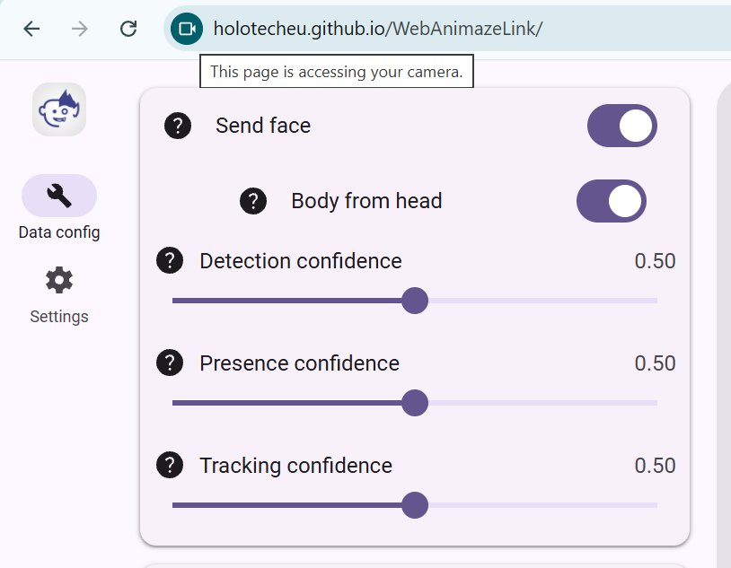
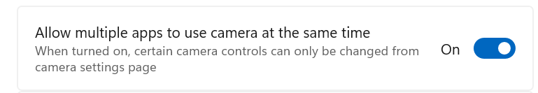
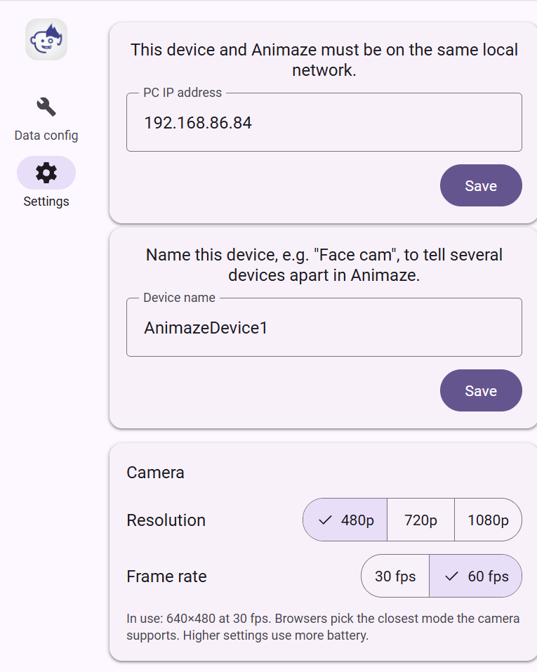
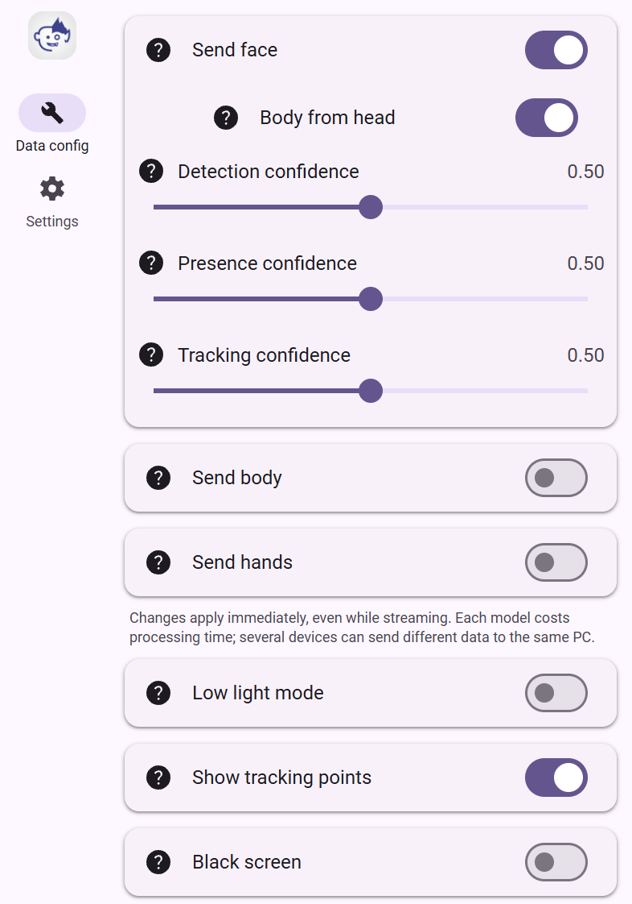
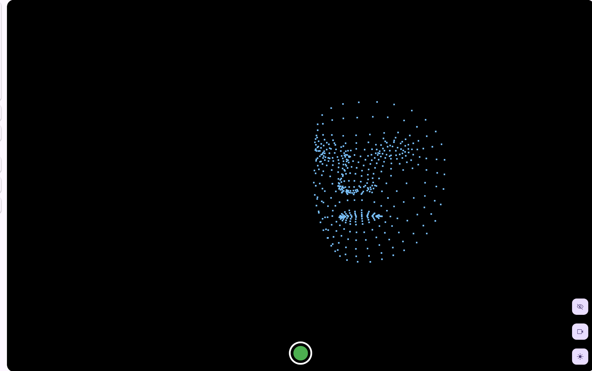

Animaze Live Link – Multi-Cam Tracker
Introduction
Starting with version 1.27.12778, Animaze supports additional external tracking options. These include the new Animaze Live Link, an internally developed web app for motion tracking built on Google MediaPipe.
Simply put, this app allows you to use your smartphone as a camera and tracking device for Animaze, and more. Not only smartphones, any sufficiently powerful device on your local network capable of running a modern web browser can serve as a tracking source. It offloads both video processing and motion tracking computations from your Animaze PC, using the secondary device's GPU for optimized, hardware-accelerated performance.
Animaze Live Link is accessible through any web browser at WebAnimazeLink .
You can also install it locally as a Progressive Web App (PWA) using your browser's install feature, allowing it to run without an active internet connection.
Animaze Live Link provides face tracking quality comparable to ARKit, but supports a much wider range of devices beyond iPhones—including Android smartphones, PCs, and Macs.
In addition to head and face tracking, it supports hand and body tracking (though using body and hand tracking increases setup complexity and may require adjusting settings for optimal performance).
How to Use – Single Camera Mode
Setup is similar to other external tracking apps, such as linking to the original Animaze iOS app via wifi. In the Animaze PC app, navigate to Select Trackers > Animaze Link and toggle it on.

Take note of the IP address displayed there.
Next, open a web browser on a device connected to the same local network as your Animaze PC, and navigate to WebAnimazeLink .

You may need to adjust browser permissions and settings to allow access to your camera (especially on a PC if you haven't used a webcam in that browser previously).
Webcam Access
On smartphones, setup is typically automatic. On PCs, some configuration may be required.
Ensure the browser has permission to access your webcam (check browser camera and security settings), and verify that the correct physical camera is selected in your browser's camera settings.
The camera selection option varies by browser and platform. For example, in Chrome on Windows, it is located on the left side of the address bar (the green camera icon).

In other browsers, this option may appear in a different location.
2. Confirm that camera access is not blocked by OS-level permissions or antivirus software.
Note that in Windows, only one application can access a physical webcam at a time by default. If the input video feed does not appear in the Animaze Link web app despite granting browser permissions, the webcam is likely being used by another application.
To resolve this, either close the application currently using the webcam, or configure Windows camera settings to allow multi-app access for that webcam.

How to Enable Multi-App Camera Access in Windows 11
- Open the Start menu and select Settings (or press Win + I).
- Select Bluetooth & devices from the left sidebar.
- Click Cameras, then select your webcam from the list of available devices.
- Scroll down to Advanced camera options and click Edit.
- Enable Allow multiple apps to use the camera at the same time (you can also select your preferred media resolution here).
- Click Apply to save your changes.
Network Configuration
In the Animaze web app, navigate to the Settings tab (cogwheel icon). Enter the exact IP address that was displayed in the Animaze desktop application under the Animaze Link tracker section, then click Save. Ensure your firewall settings allow both devices to connect over the local network.
Assign a unique name to this tracking device (a unique name is required if you plan to use multiple tracking devices simultaneously for separate head, hand, or body tracking later on).
Adjust any additional settings as needed.

Return to the "Data config" tab.
For a basic setup, select "Send face" (with hands and body disabled) and enable "Body from head" to approximate body movement based on head positioning.

Start motion data stream
Click the green button at the bottom of the video feed. Once clicked, it will turn red, indicating that tracking data is streaming to the Animaze PC app and your avatar should begin moving.

Animaze Link is now configured and active.
How to Use – Multi-Camera Mode
You can enable additional tracking modules, such as hand and body tracking, within the same app instance. However, optimal framing for face tracking (close-up) differs from the wider framing required for effective hand or body tracking.
For optimal motion capture, use separate cameras positioned appropriately: one close-up for face tracking, and another placed further back with a wider field of view for hand or body tracking.
With Animaze Live Link, each tracking element (head, hands, or body) can run in separate app instances across multiple devices. As long as the devices are on the same local network, use separate cameras, and have unique device names, the Animaze desktop host will combine their tracking streams seamlessly.
If your PC has sufficient processing capacity, you can also run up to three separate instances on the same system using three webcams across three browser tabs. Alternatively, you can use separate smartphones placed around the performer—for example, one dedicated to face tracking, another for hands, and a third for body tracking.
Note that some general tracking parameters can be adjusted in the web tracking app and more specific ones within the Advanced Tracking settings in the Animaze desktop interface. Fine-tuning settings in both locations may be required for optimal tracking performance.
Pro Tip: High-Performance Tracking
If your webcam supports 60 FPS or higher but browser tracking appears capped at 24 or 30 FPS, close all open browser windows and launch your browser with frame rate limits disabled.
For Google Chrome, launch the application using the following command-line flags:
chrome.exe --args --disable-gpu-vsync --disable-frame-rate-limit